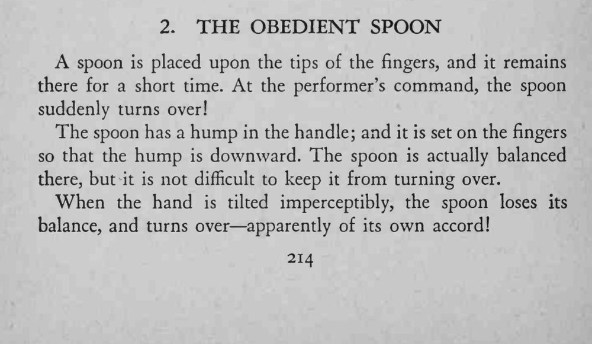

汤匙稳稳搭在指尖上，魔术师一声令下，它竟自己翻了个身。
倾斜幅度越小越好，观众才不会看出是你动了手。

A spoon is placed upon the tips of the fingers, and it remains there for a short time. At the performer's command, the spoon suddenly turns over! The spoon has a hump in the handle; and it is set on the fingers so that the hump is downward. The spoon is actually balanced there, but it is not difficult to keep it from turning over. When the hand is tilted imperceptibly, the spoon loses its balance, and turns over apparently of its own accord!